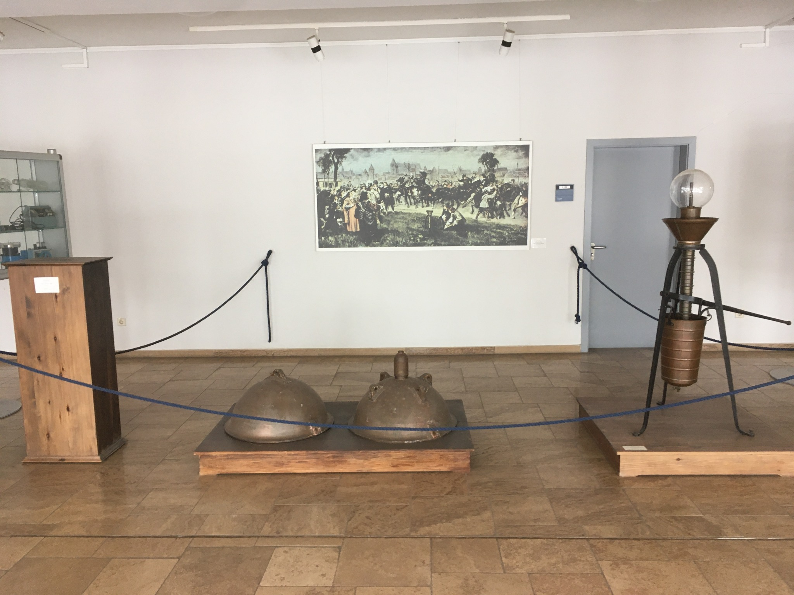
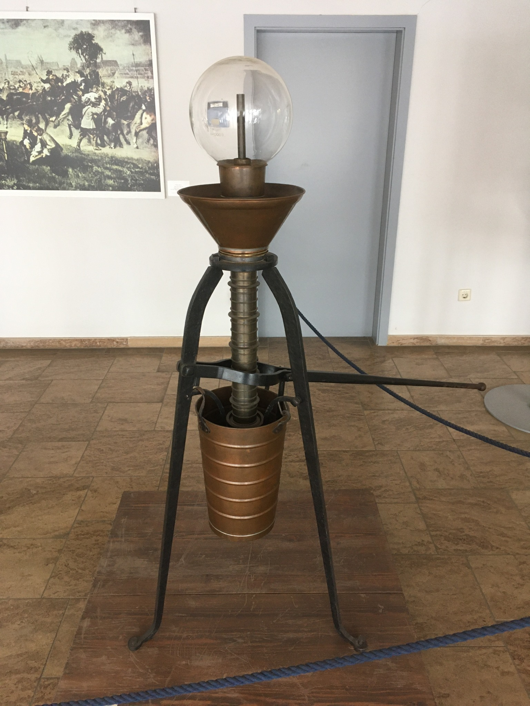

Tippe auf ein Objekt im Ausstellungsfoto

Otto von Guericke
Sprechende Einführung zu Luftdruck, Vakuum und den Magdeburger Halbkugeln
Sprechende Einführung
Der Text ist im Code als Variable hinterlegt und kann direkt ausgetauscht werden.
Geboren: 1602 in Magdeburg
Bekannt für: Vakuumexperimente und die Magdeburger Halbkugeln
Didaktische Idee: Luft übt Druck aus – auch wenn wir sie nicht sehen.
Die Magdeburger Halbkugeln
Füge die Halbkugeln zusammen, pumpe Luft heraus und prüfe, wann sie sich wieder trennen lassen.
Die historische Vakuumpumpe
An das ausgestellte Original angelehnte Darstellung

Funktionsweise
Mit der Pumpe wird Luft schrittweise aus einem abgeschlossenen Volumen entfernt. Sinkt der Innendruck in den verbundenen Halbkugeln, wirkt der äußere Luftdruck relativ stärker und presst die beiden Hälften zusammen.
Die ausgestellte Pumpe besitzt einen langen Hebel, einen zentralen Zylinder und eine gläserne Kugel als sichtbaren oberen Abschluss.
TODO: Historische Details und Bauteile ergänzen.